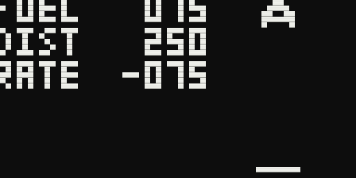
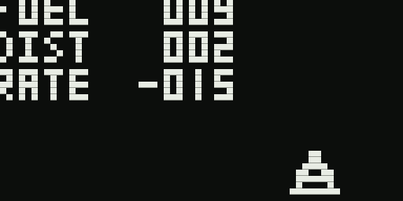
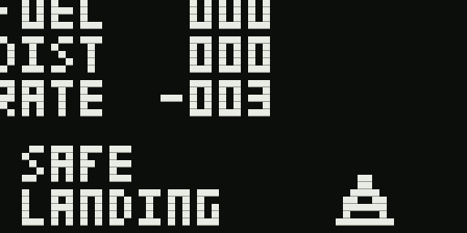

Lunar Lander
Stuart Croft · DREAMER no. 5 (1981-01) p. 18 1K RAM



A turn-based landing: the screen shows fuel, distance and descent rate, plus a small module on the right. Each turn you enter a burn of 0-9 units to fight gravity. Touching down at a speed of 0-3 is a safe landing.
Keys
0-9 = fuel burned each turn.
Files
| File | Version | Load | Run |
|---|---|---|---|
| Lunar Lander.d68 | main | 0080-03FF | C000 |
Listing as transcribed (with notes): lunar_lander.txt
Source
DREAMER no. 5 on archive.org, p. 18 (PDF page 20). Author: Stuart Croft.
Corrections applied
None.
Open doubts
- A machine-code call to 05F0 (outside the program) is printed clearly; harmless in the simulation.